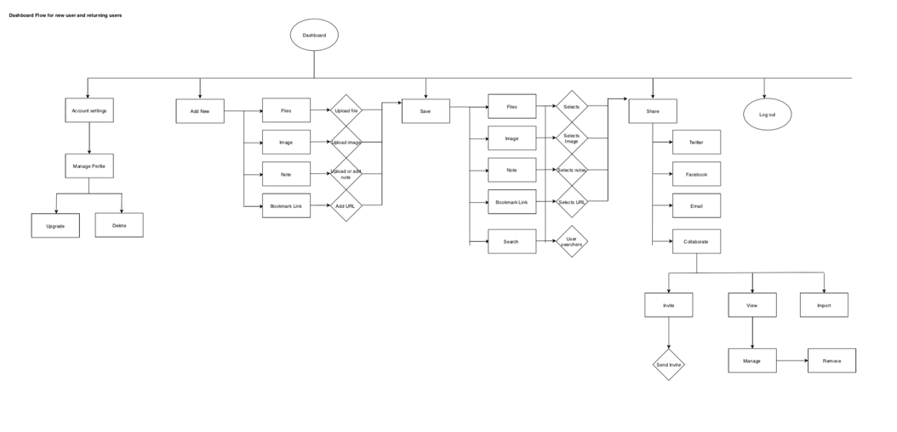

case study
truwork
Web Application
User Experience, Branding, Visual Design
3 months // 2018
Summary
truwork has an intuitive interface combines the ease of creating, searching, bookmarking, and saving your ideas in one place. You can conveniently share your files and collaborate with whoever you want, whenever you want. It’s simple and secure.
Tools Used:

Summary
truwork has an intuitive interface combines the ease of creating, searching, bookmarking, and saving your ideas in one place. You can conveniently share your files and collaborate with whoever you want, whenever you want. It’s simple and secure.
Tools Used:

Overview
Problem
A client came to us with the problem that the cloud storage and organization platform is a fast growing marketplace. From Google Drive to Evernote, each digital note taking and syncing service offers a variety of convenient features to enhance productivity and to keep content stored and accessible at any time. However, sometimes these platforms are not intuitive and lack in some important features i.e. the ability to categorize content and/or view previews of files.
Solution
Introducing truwork, a new software-as-a-service (SaaS) web application that prides itself on effortless content management which solves the problem of digital disorganization.
User Research
Survey
A survey was used to conduct research on the uses for cloud storage services and the expectations from 20 current and perspective users.
Overall, there was no clear pattern in the data that suggested users were unhappy with their current mediums of cloud-sharing. So the challenge that was presented was to focus on the main important points from the survey and build upon that.
Competitive Anaylsis
Currently, there are so many great competition roaming around in the cloud-storage market. Some of the main companies include: Google Drive, Dropbox, and Evernote.
All of the three proved to be great cloud-platforms, however they lacked certain features.
For example, Drive and Dropbox have no easy simple way of saving links, while Evernote lacks in note storing. Overall, the research revealed new insights and opportunities that could be used to create into a new product.
User Personas
Two user personas were created based on information obtained from the results of the user survey distributed earlier.


Both users found that easy collaborative features are needed & a need for a better way to organize and view files was important
User Stories
From the results of the survey and personas, I created a list of what I believed users would want to accomplish with my product I prioritized certain tasks as high, medium, and low, and also for a minimum viable product (which included signing up, signing in, account settings, etc).
User Flows
From the results of the survey and personas, I created a list of what I believed users would want to accomplish with my product I prioritized certain tasks as high, medium, and low, and also for a minimum viable product (which included signing up, signing in, account settings, etc).
Visual Design
Wireframes
Putting together all of the information from the User Stories, Flows, and sitemap basic wireframes were sketched out of potential screens of the product. After making the wireframes into a prototype, a few usability test were conducted to see how easy or hard basic tasks were.


Branding
Word Association & Mind Mapping
I began my brainstorm with word-association exercises to help come up with a name for the platform.
Finally I was able to narrow the name for my cloud platform to truwork. truwork is a very light, simple, yet sophisticated platform. It is pretty intuitive to use. When people think of truwork they will know that the brand is very trustworthy and reliant. The use of the word “true” instills a sense of positive trust in the user. For a cloud-service platform security and trust are really important for the user. The user would want to make sure that their data is in safe hands and protected.
Logo Development
While developing the logo, I thought about the best way to represent my name truwork. I wanted to keep something that looked professional, but something that would be simple enough for someone to remember and recognize. I came up with a variety of options and finally settled on the current logo.
Style Guide + Colors
After brainstorming ideas and names, picking the fonts, and creating the logo, I picked the the colors which I felt would represent the brand the best. I wanted professional palette with pops of color. I chose a complementary color scheme with shades of warm yellow to reflect happiness and trust, and a dark navy blue as it represents trustworthiness and reliability.
Hi-Fi Mockups
Preference & User Testing
After creating the hi-fidelity mockups, I conducted preference tests related to the visual design.
I conducted three usability tests after completing my prototype to ensure that the site was easy to navigate. I asked users to:
A few issues were brought up & changed for the final product:
Conclusion
Creating this application challenged me to create an intuitive solution to frustrations current cloud-platform users were experiencing. truwork succeeded in being this solution. After testing and many iterations users were able to easily navigate the website. The colors and font choices worked great together making the website seem professional yet approachable.
The process helped me grow as a designer. I learned the importance of user testing as their feedback was crucial in both usability and visual design. I saw my product becoming better and better with every iteration. I learned the importance of patience, and understanding the product to best I could.